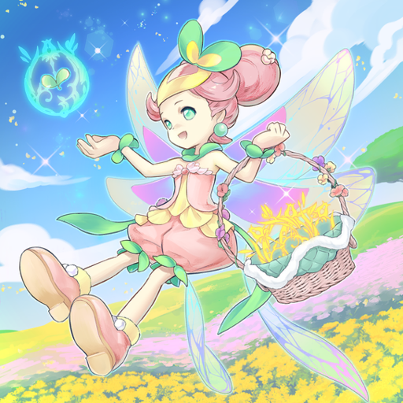
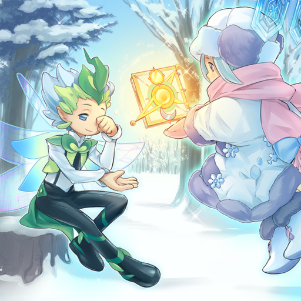
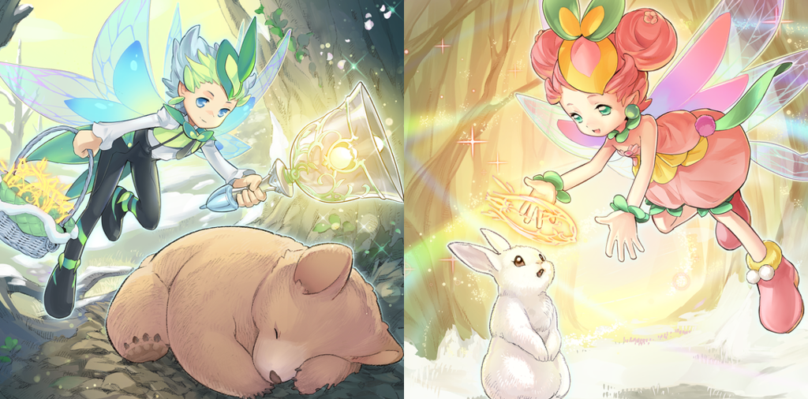
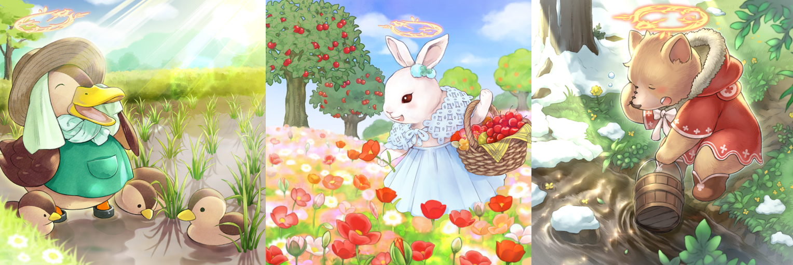
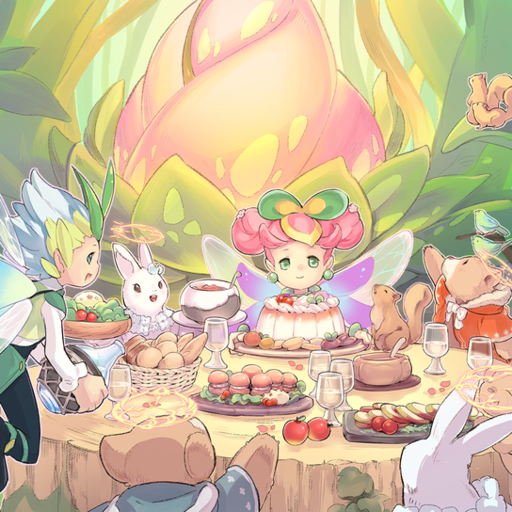
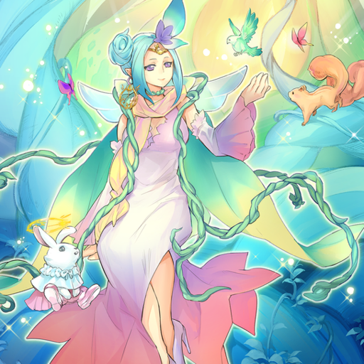
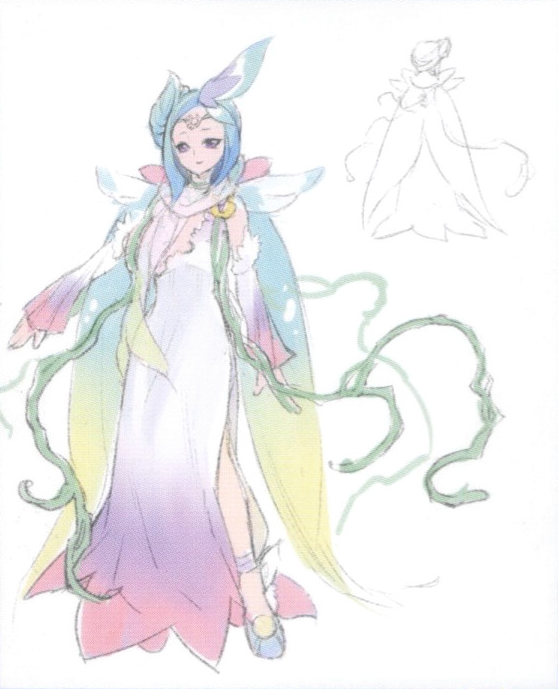

A spring fairy rubbing its sleepy eyes, receiving the "Journal of Seasons", where the records of the seasons are written, from a winter fairy. The surrounding area is still covered in a winter landscape, however, the "Changing Season" is about to begin spring.

The fairies fly all over the world, granting "Corollas" to the animals that give them a hand with the arrival of spring. The animals that have received these "Corollas" become able to speak and walk on two legs through some mysterious power.


Thanks to the hard work of the fairies and the animals, the forest recovers its colors and a warm wind envelops the world. Finally, with the awakening of the "Goddess", the arrival of spring is complete.


